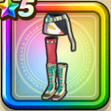

ニューフェイスボトム
攻略班 7.0点 / 眠り耐性+5%暴嵐天バリゲーンへの耐性+10%眠り耐性+5%守備減耐性+10%守備減耐性+10%【スパスタ】スキルの体技ダメージ+1%メラ属性斬撃・体技ダメージ+5%【スパスタ】とくぎHP回復効果+1%
くわしい特徴
【レベル別習得スキル】 Lv1眠り耐性+5% Lv5暴嵐天バリゲーンへの耐性+10% Lv8すばやさ+5 Lv10眠り耐性+5% Lv12【スパスタ】とくぎHP回復効果+1% Lv15【スパスタ】スキルの体技ダメージ+1% Lv18メラ属性斬撃・体技ダメージ+5% Lv20守備減耐性+10% Lv20【スパスタ】きようさ+5 Lv23かいふく魔力+7 Lv25守備減耐性+10% 【限界突破スキル】 1凸攻撃力+5 2凸守備力+5 3凸すばやさ+7 4凸さいだいHP+10